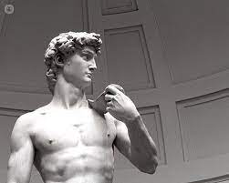

"LA BELLEZA"
 El concepto de lo bello, el placer estético y los criterios de belleza, son categorías estéticas objeto de preguntas que el ser humano desde hace mucho tiempo. Gracias a estos interrogantes surge una rama de la filosofía conocida como la estética, "conocida por ser la corriente filosófica de la belleza" teniendo esta por objeto de estudio el arte y la percepción de la belleza y sus criterios.
El concepto de lo bello, el placer estético y los criterios de belleza, son categorías estéticas objeto de preguntas que el ser humano desde hace mucho tiempo. Gracias a estos interrogantes surge una rama de la filosofía conocida como la estética, "conocida por ser la corriente filosófica de la belleza" teniendo esta por objeto de estudio el arte y la percepción de la belleza y sus criterios.
Para comenzar esta reflexión, debemos tener en cuenta que es el criterio de belleza, o el criterio del gusto es particular y existen tantos gustos como personas y culturas.
El criterio del gusto es de carácter personal, y es válido únicamente para quien lo realiza, se hace de manera monótona e inconsciente, despertando emociones y sensación al momento de percibir algo “bello”. Sin embargo aunque darnos cuenta de los bellos debería ser personal, vivimos en una sociedad que se ha encargado de imponernos unas modas o criterios más generalizados.
Teniendo en cuenta que existe un concepto de belleza personal , solo será válido para nosotros, el carácter universal de lo bello se encuentra afectado en gran parte por el factor social (Debemos tener en cuenta que, según la zona geográfica, cultura, religión etc.… se van a tener estándares de belleza diferentes)
¿Pero el prejuicio de belleza va solo a lo físico?
Los filósofos griegos helénicos plantearon dos formas de juzgar la belleza. Plotino, por ejemplo, “seguidor” de platón, (por eso se verán reflejadas sus ideas del mundo tangible e intangible) nos habla de la belleza superficial, los cuerpos y las cosas físicas, que pertenecen al mundo tangible (que el hombre puede percibir con solo la vista) pero para este pensador, juzgar las cosas por su naturaleza material es un grave error, pues él habla de la “verdadera belleza” que pertenece a mundo intangible o real (el mundo de las ideas). Se debe juzgar a las personas por su alma, y por la calidad de esta, y los objetos no por su belleza si no por las ideas que existen de tras de ellos.
El criterio del gusto que es personal va de la mano a las emociones que se nos generan al apreciar algo bello. Uno de los criterios que tienen las personas al realizar su crítica sobre si algo es bello o no, es la percepción queda la obra misma, pues el ser humano es por naturaleza narcisista por lo tanto si una obra asemeja su forma humana o representa su humanidad de manera inconsciente la considera bella.
Es cierto, el arte es como un velo puesto sobre nuestra realidad, una forma de escapar de la misma, el arte genera una emoción, un sentimiento, y transmite ideas, opiniones o emociones, una cosa es lo que el artista desea plantear y otra es lo que el receptor perciba con la obra.
Existen diversos filósofos que han hablado sobre el criterio de la belleza tanto desde un punto de vista personal como universal, como Platón que habla de la belleza como un ideal fundamental. Para otros filósofos es un concepto impuesto por la sociedad viéndolo desde un punto de vista comercial o propagandista.
En conclusión, la belleza es subjetiva, es un criterio personal único, pero a la vez es universal que va de la mano con la perspectiva física, pero encaminado a los sentimientos “al mundo de las ideas” también es un criterio de belleza que evoluciona mediante el tiempo que se encuentra en constante cambio y que varía según la zona y la persona que lo realice.